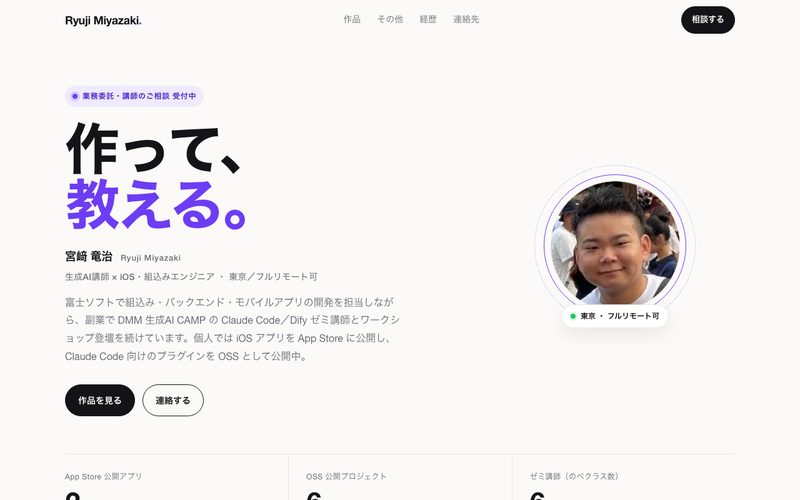
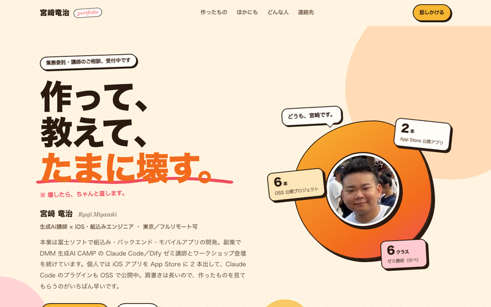
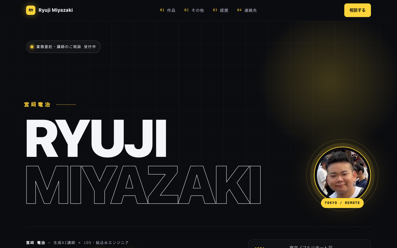
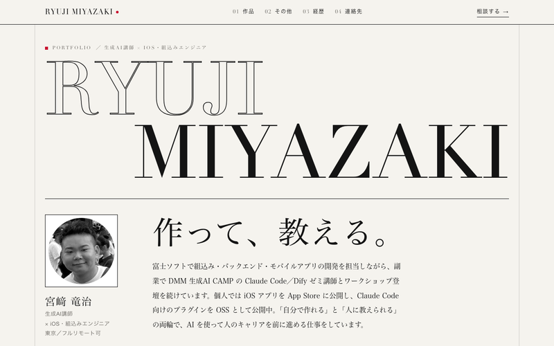
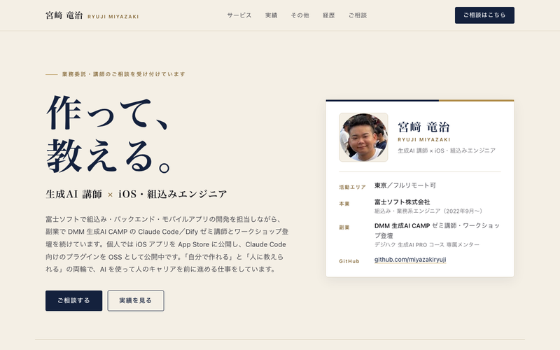

同じ設計書（portfolio.md）・同じ画像から、雰囲気だけ変えた5パターン。カードを押すと開きます。

白地に差し色1つ。余白を広く取り、作品カードを主役に。実績は数字の帯。

暖色と有機的な形、浮かぶバッジや吹き出しで人柄を前に出す。語り口もくだけた一人称。

黒地にネオンの差し色1つ。巨大なネームタイポと、光るカード。

雑誌の誌面のような白黒と罫線。セリフ体の見出しと番号付きの作品リスト。

紺とベージュ、セリフ体。提供できることをサービスカードで明示し、相談の流れまで。